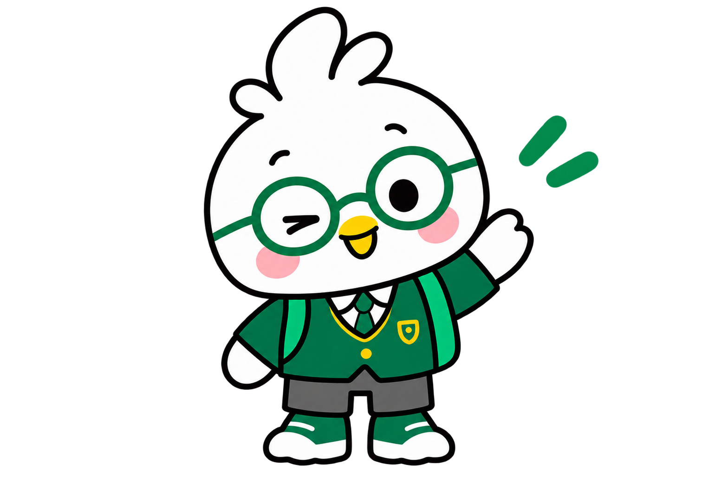
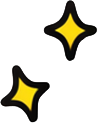
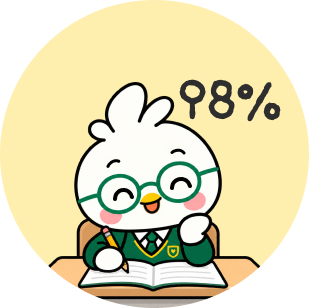

{{ lang.code }}
{{ lang.label }}
{{ lang.check }}
{{ tTeacher }}
{{ tStudent }}
{{ t2n }}
{{ t2n }}

{{ mood0 }}
{{ mood0 }}
{{ mood1 }}
{{ mood1 }}
{{ mood2 }}
{{ mood2 }}
{{ tNext }}
{{ tNext }}
{{ t3n }}
{{ t3n }}
{{ tNext }}
{{ t4n }}
{{ t4n }}

{{ tCont }}

{{ t5 }}
{{ t5 }}
{{ tNext }}